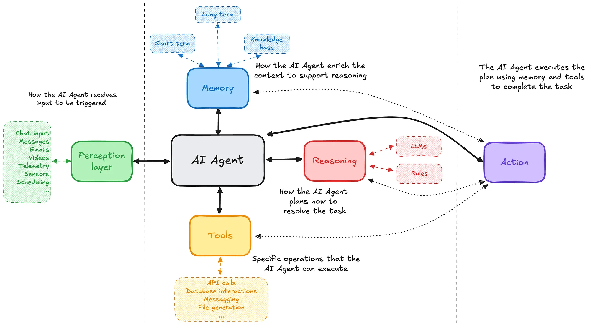
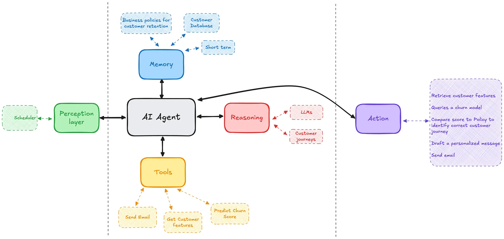

Why you should still care about ML in the Agentic AI age
Classical ML provides the structured decision signals that LLMs cannot. As agents scale, MLOps becomes the foundation that keeps them trustworthy.
Alessandro Garavaglia | 5 min read | Jul 3, 2025
As AI gains traction in enterprise workflows, there is a growing assumption that LLMs can do it all. But when it comes to high-stakes, automated decision-making, classical machine learning remains essential to make the correct ones.
What are AI agents?
AI agents are autonomous systems designed to perceive their environment, reason about it, and act toward a defined goal. Unlike "simple" LLM applications, that are stochastic generators of text, agents are design to execute tasks or make decisions. They coordinate between various capabilities — language, logic, memory, and tools — to execute complex workflows.
An AI agent typically comprises the following architectural components:
- Perception Layer: Interfaces with APIs, sensors, databases, or real-time streams to collect data about the world or environment.
- Memory Module: Stores contextual or task-specific information across time. This may include vector databases, structured stores, or simple in-memory state.
- Reasoning & Planning Engine: Determines the next best action using LLMs, rule-based systems, or symbolic planning.
- Tools Integration Layer: Connects to external tools like Python interpreters, databases, search engines, or ML inference services.
- Action Layer: Executes actions (for example API calls, code execution, web searches, document editing, ML inference) based on plans and given tools.

Agents are orchestrators, not just generators. They combine reasoning, tools, and external knowledge to achieve goals autonomously.
There are many frameworks (like LangChain and CrewAI) that offer abstractions to compose these elements into modular, reusable agents. Things get more and more complicated by the day with Google's A2A or Anthropic's MCP protocols, but the basic components of a single AI Agent can be summarized as above.
How agents automate decision making
AI agents are rapidly transforming how workflows and processes can be automated. From triaging customer support tickets to managing infrastructure or generating financial reports, agents can perceive context, analyze data, and autonomously decide how to act.
Yet, it's important to acknowledge a core limitation:
LLMs are models that generate text according to statistical distributions, they are not decision engines.
While they excel at interpreting and generating natural language, LLMs struggle with certain quantitative operations, like performing exact calculations, applying formal logic, or understanding structured business data (e.g., tables, time series). Also, they are not able to predict the future!
To automate real-world decisions agents need structured predictive signals. That's where classical machine learning (classification models, regression models, time-series forecasters, clustering, etc...) comes in.
A use case: Churn reduction
Imagine a subscription-based business (like telcos, streaming services, LLMs APIs, etc...) looking to reduce churn. A customer success agent is tasked with identifying and retaining high-risk users.

The agent, given the request to analyze a customer and take action if the customer is at churn risk, will do the following:
- Query the customer database to retrieve the needed features;
- Query a churn prediction model (e.g., XGBoost or logistic regression) to assign a risk score to each customer.
- Given the business policy and the churn score, identify the correct customer journey to apply;
- Use an LLM to draft a personalized message in accordance with customer journey and customer features;
- Sends the message via email.
In this workflow:
- The ML model provides the decision signal: Who is likely to churn?
- The LLM contextualizes communication: How do we speak to them?
- The agent orchestrates the process: When, where, and how do we act?
What happens when ML models fail?
Let's say the churn model performs badly (it's underperforming, overfitted, or misaligned with current business dynamics). It wrongly classifies a large cohort of loyal customers as at risk.
Here's what could go wrong:
- The agent blasts thousands of unnecessary offers, eroding customer trust;
- Marketing teams spend budget on ineffective outreach;
- Customer service is overwhelmed by confused or annoyed responses;
- The business loses revenue and brand reputation through automated overcorrection.
Agents scale impact. Errors of ML models are automatically propagated at scale by Agents decisions.
Agents introduce automation, but also amplification. They don't just use ML outputs, but they act on them autonomously, at scale, and in production.
This is why model performance isn't just a data science concern. It's an operational risk that can damage a company's finances and reputation.
MLOps is no longer optional
This is where MLOps (Machine Learning Operations) comes into play.
MLOps is the engineering discipline focused on making ML models production-grade, robust, reproducible, and continuously monitored. It provides the scaffolding necessary to ensure that the predictive components of agents remain effective over time.
In the context of AI agents, MLOps is the foundation that keeps their intelligence aligned, observable, and maintainable.
Key MLOps capabilities are:
- Model Registry & Versioning: Track and manage models as products, so agents always use the right version;
- Model Serving Infrastructure: Low-latency, scalable inference endpoints accessible as tools within agents;
- Monitoring & Drift Detection: Alert when models degrade due to data shifts or feedback loops;
- Feedback Loops: Agents can log outcomes (e.g., success/failure) and trigger retraining pipelines;
- Governance & Auditability: Track what model made what prediction and when.
MLOps turns ML models into reliable services. And reliable services make agents trustworthy decision makers.
Many of the MLOps principles can be extended to agent workflows themselves:
- Versioning of agent policies, prompts or plans;
- CI/CD pipelines for testing agent logic;
- Telemetry to observe agent decisions and outcomes;
- Guardrails and fallback logic in case of unexpected behavior.
As agents move from prototypes to production, treating them as composite systems with lifecycle management is no longer optional. It's the path to safe, scalable automation.
Conclusion
The rise of AI agents is a defining moment in automation. But this shift doesn't diminish the importance of classical machine learning.
Classical ML remains the bridge between perception and action. It provides structured, data-driven signals that transform agents from reactive scripts into strategic actors.
As agents scale across industries, the need for robust infrastructure, governance, and lifecycle management becomes even more urgent. In this new landscape, the synergy between LLMs, classical ML, and MLOps becomes a requirement.
This post is not meant to provide definitive answers or prescriptive guidance. Its goal is to spark reflections and discussions on the topic.
The views expressed are my own.
Tags: AI Agent, MLOps, Machine Learning